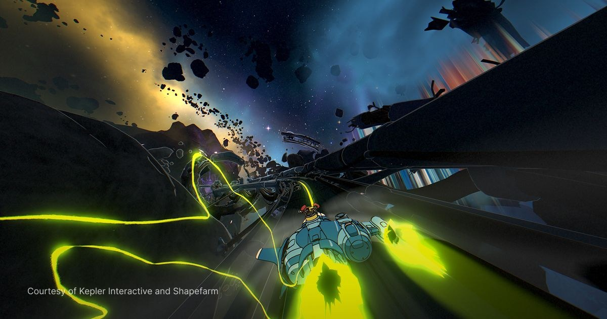

《Orbitals》拆解 UE5 復古動畫渲染：Cel／背景分離、Bloom Mask 與底片後製
Shapefarm 公開如何在 UE5 內改造預設渲染管線，將 cel character、painted environment 與 film effects 分層處理，並透過 Material Editor 維持美術可迭代性。

Shader ★★★★★
完整分析
技術重點
Cel character、背景與 film effects 分層，並以自訂 render buffer／post-process 模擬 80–90 年代動畫的類比限制。
Production 價值
核心不是單一 toon shader，而是讓 art team 在 Material Editor 內持續調整，同時把背景與角色的 shading responsibility 分開。
導入測試
用同角色／同場景測 cel、painted environment、masked bloom、grain/halation 四層，記錄 render cost 與美術修改回合數。